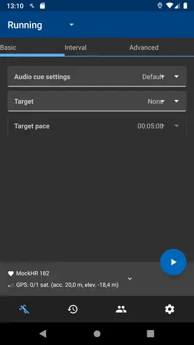
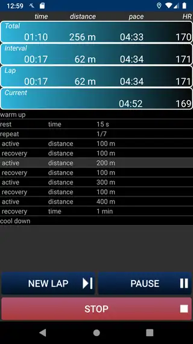

RunnerUp
صحة ورياضة
Track your sport activities with RunnerUp using the GPS in your Android phone: * See detailed stats around your pace, distance and time. * Get stats and progress with built-in highly configurable audio cues. * Run free runs with target pace or target heart rate zone * Easily configure and run effect
✓ ترخيص مفتوح (GPL-3.0-only) · آخر تحديث: 2026-03-29
2.11.0.1الإصدار
8.0 MBالحجم
GPL-3.0-onlyالرخصة
Open in Kanzتحميل APK (8.0 MB)
Download APK
SHA-256: aea035d36c59cb7c88ad88a42f507054125cd18b97b06e5ce0b4b82ecf771824


امسح الكود لفتح صفحة التطبيق
Scan to open this app page
لو كنز مش متثبت عندك: نزّل متجر كنز.
Not installed? Get the Kanz store.